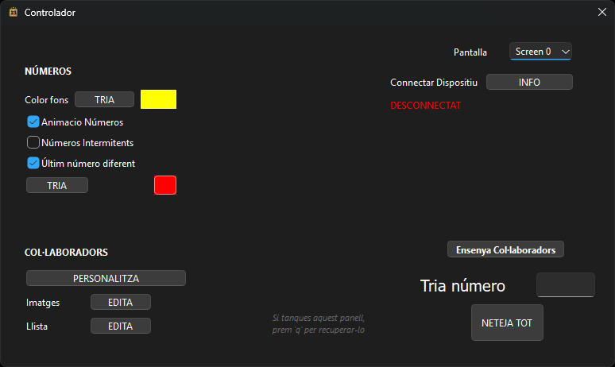
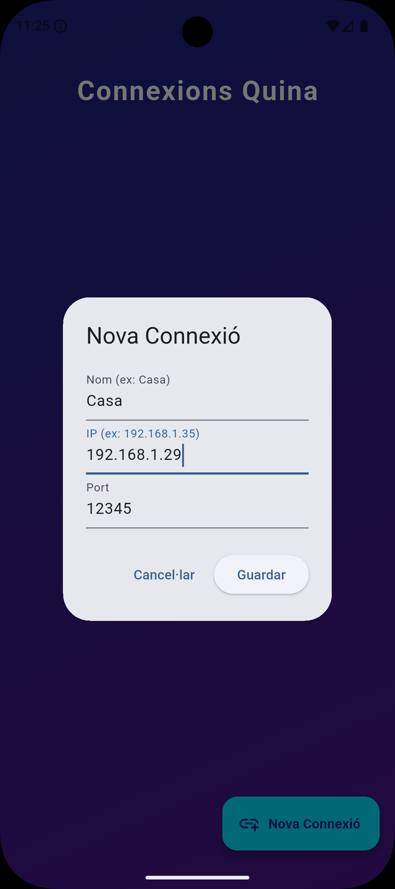

Manual de Usuario
Bienvenido a la guía oficial. Aprende a configurar tu partida paso a paso.
1. Conceptos Básicos
Al abrir la aplicación de escritorio, verás que se abren dos ventanas diferentes:
- Ventana de Proyección ("MainWindow"): Es la pantalla que verá el público. Muestra la tabla de números y los colaboradores. Siempre está en pantalla completa.
- Ventana de Configuración ("Controlador"): Es tu panel de control privado. Desde aquí configuras los colores, los patrocinadores y ves la información de conexión.

2. Gestión de Pantallas
La aplicación está diseñada para trabajar con dos monitores (o Portátil + Proyector).
- Conecta el proyector a tu ordenador y configura Windows en modo "Extender Pantalla".
- En el "Controlador", busca el desplegable llamado "Pantalla".
- Selecciona dónde quieres enviar la proyección (por ejemplo: "Pantalla 2"). La ventana de proyección se moverá automáticamente.
3. Conexión del Móvil
Para controlar la partida a distancia, necesitas la app Android "Quina".
Paso 1: Obtener la IP
En el "Controlador" del ordenador, ve a la pestaña o apartado "INFO". Allí encontrarás tu IP Local (ej: 192.168.1.XX) y el Puerto (siempre es 12345).
Paso 2: Configurar la App Móvil
- Abre la app "Quina" en el móvil.
- Ve a "Nova Connexió" (Nueva Conexión).
- Rellena los datos:
- Nom (Nombre): Pon un nombre para recordar la sala (ej: "Pabellón").
- IP: Escribe la IP que has visto en el Controlador.
- Port (Puerto): Deja el
12345(viene por defecto).
- Pulsa Guardar.

Si la conexión es correcta, el ordenador mostrará un aviso y el móvil abrirá el panel de control.
4. Funcionamiento del Juego (Desde el Móvil)
Una vez conectado, tendrás el control total desde el teléfono:
- Marcar números: Haz doble clic sobre cualquier número de la parrilla (1-90) para marcarlo o desmarcarlo.
- Botón "Desfer" (Deshacer): Si te has equivocado, púlsalo para cancelar la última acción.
- Botón "Netejar" (Limpiar): Borra todos los números para empezar una nueva partida.
- Botón "Ensenyar Col·laboradors": Fuerza que se muestren los patrocinadores en la pantalla grande.
5. Gestión de Patrocinadores
Puedes personalizar la barra lateral de la proyección desde el "Controlador". Hay dos botones clave:
- Imatges (Imágenes): Abre una ventana para seleccionar y cargar los logotipos (JPG/PNG) de tus colaboradores. Puedes seleccionar múltiples a la vez.
- Llista (Lista): Abre un editor para escribir los nombres de los colaboradores de texto (uno por línea).
Puedes ajustar el tamaño de la barra lateral arrastrando la línea divisoria en la ventana de proyección.
6. Personalización
Haz que el Bingo luzca como tú quieras. Todas estas opciones se encuentran en el "Controlador":
Visualización de los Números
- Color fondo números marcados: Elige qué color tendrán los números que ya han salido.
- Animación números: Activa/Desactiva el efecto de "zoom" cuando sale un número nuevo.
- Números Intermitentes: Haz que el último número marcado parpadee (blanco/color) para destacarlo.
- Último número diferente: Puedes elegir un color específico solo para la última bola cantada.
Visualización de los Colaboradores
- Título: Cambia el texto de la cabecera (por defecto "Col·laboradors") y su color.
- Fondo: Cambia el color de fondo de la barra lateral.
- Tipografía: Elige la fuente de letra que mejor se lea.
- Tamaños: Ajusta independientemente el tamaño de las imágenes, el tamaño del texto y el espacio de separación entre nombres.
7. Solución de Problemas
El móvil no se conecta
Asegúrate de haber permitido el acceso a redes privadas/públicas cuando Windows te lo ha pedido la primera vez (Firewall). Comprueba que la IP del móvil es idéntica a la de la pestaña INFO.
He cerrado el controlador sin querer
Pulsa la tecla q con la ventana de proyección seleccionada y volverá a aparecer.